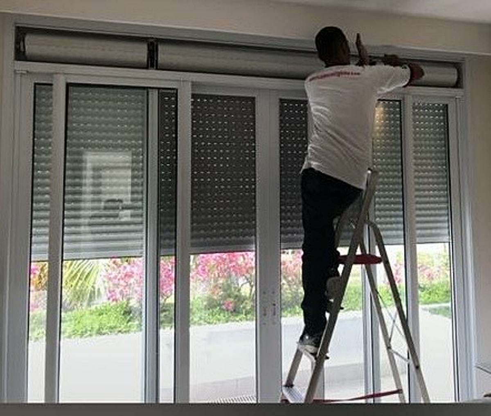
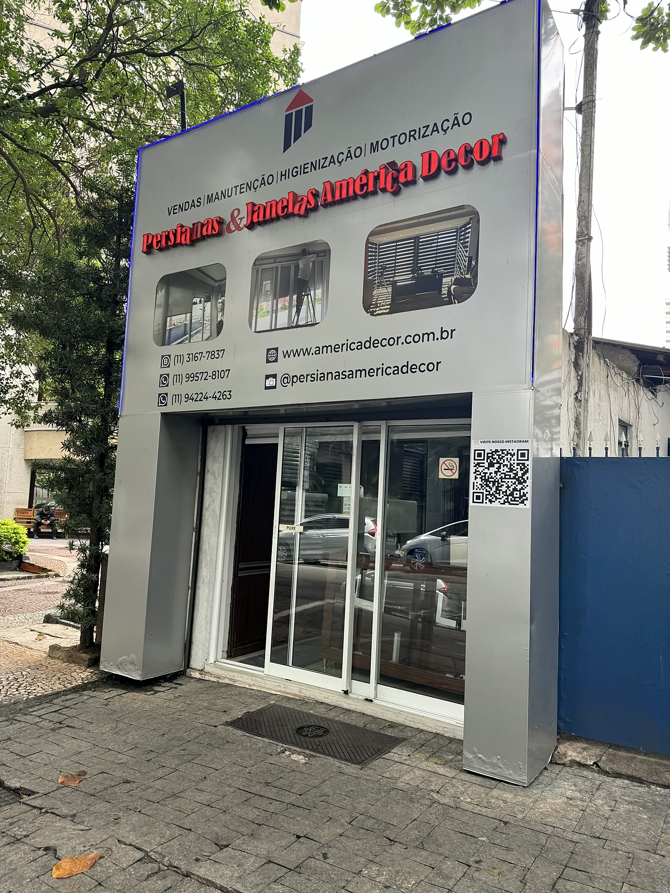

Anos de experiência aplicados em persianas, instalação, manutenção e pós-venda.
Quem é a América Decor
Experiência, atendimento consultivo e execução com padrão premium.
A América Decor atende clientes que buscam conforto, acabamento, praticidade e segurança na escolha. São mais de 35 anos orientando manutenção, motorização e projetos sob medida com atendimento próximo e execução cuidadosa.
Atendimento com orientação técnica, acabamento bem resolvido e percepção de valor premium.
Projetos sob medida para salas, quartos, varandas e ambientes de alto padrão.
Soluções para escritórios, fachadas, construtoras e padronização de ambientes.

Como trabalhamos
Atendimento consultivo, acabamento premium e suporte do início ao pós-venda.
A América Decor atende projetos residenciais e corporativos com orientação técnica, especificação correta, instalação cuidadosa e acompanhamento depois da entrega.
- Orientação técnica antes do fechamento
- Seleção de linha conforme o ambiente
- Execução alinhada com acabamento e durabilidade

Loja física
A fachada da loja reforça proximidade, confiança e continuidade no atendimento.
Além da execução em campo, a América Decor também transmite segurança por ter presença física, atendimento próximo e operação real para acompanhar o cliente do orçamento ao pós-venda.
- Referência física para atendimento e relacionamento
- Mais confiança na hora de fechar o projeto
- Mais segurança para fechar com quem acompanha o projeto de ponta a ponta
Compromissos da marca
O que você pode esperar ao falar com a América Decor.
Orientação clara
O cliente entende o que está comprando, por que aquela linha faz sentido e como será atendido.
Confiança visual
Ambientes bem fotografados, sem excesso de efeitos, com estética limpa e premium.
Pós-venda relevante
Manutenção e suporte reforçam credibilidade e continuidade no atendimento.